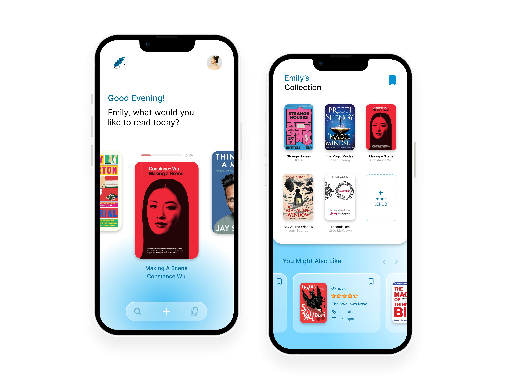
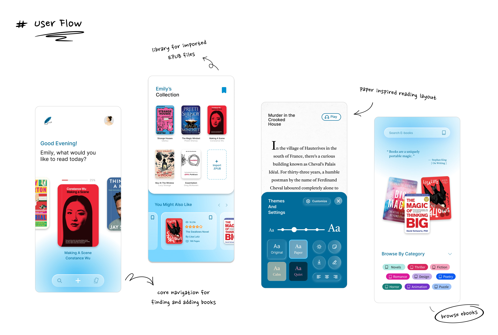
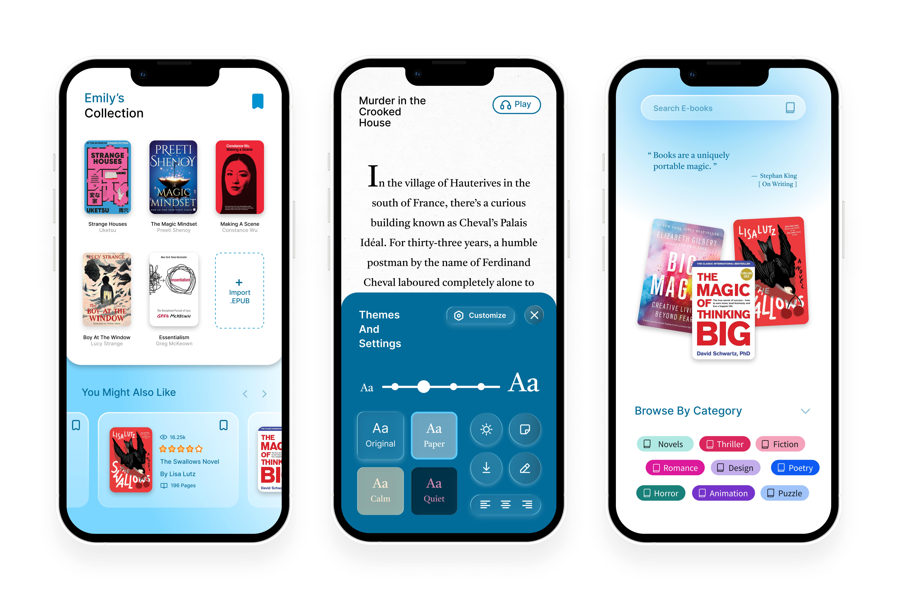

Quill is a .EPUB reader designed to help users import, organize, and read e-books through a calm library interface and an immersive, paper-like reading experience.
overview
This interface reimagines the digital experience of downloaded e-books, blending a tactile, library-inspired design with a streamlined reading environment that offers various modes, gentle color themes, and seamless, distraction-free reading.

Design System
Aa
Inter
designed by Rasmus Andersson, is a neo-grotesque typeface from 2017 crafted for digital
screens. It features a tall x-height for clear readability. It's a smart choice for clean,
modern UI design.
RegularMediumSemiBoldBold
#FFFFFF
white
#DFF4FD
light blue
#7AD7FF
blue
#016B99
peacock blue
#050505
black


Final Takeaways and
What I’d Improve Next...
Creating Quill reinforced how important typography and layout are for
maintaining readability in digital reading environments.
In the future, I would explore smarter navigation features such as quick chapter access
and improved progress tracking to make long books easier to navigate.
I would also test different library organization methods to help users manage large
collections of imported EPUB files more efficiently.
Reading comfort depends heavily on typography, spacing, and theme options such as
light, sepia, and dark modes.